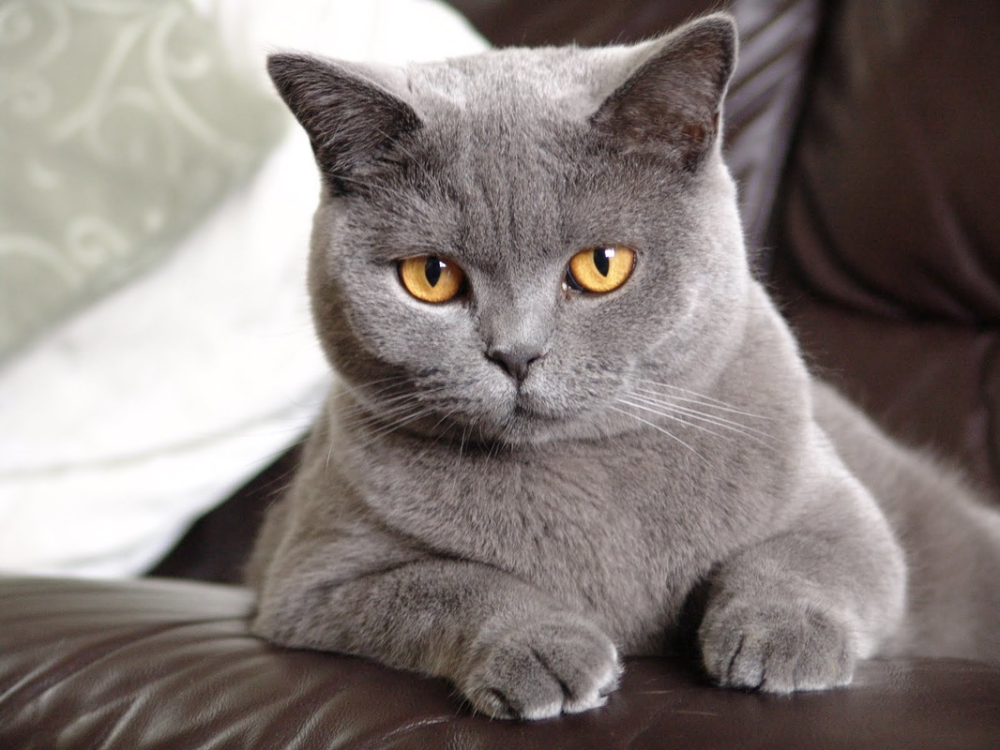

Британская короткошерстная кошка

Британская короткошерстная кошка станет прекрасным компаньоном для людей
разного возраста и семей с детьми благодаря спокойному жизнерадостному характеру
и философскому отношению к ежедневным отлучкам хозяев.
Краткая информация
- Название породы: Британская короткошерстная кошка
- Страна происхождения: Великобритания
- Время зарождения породы: XIX век
- Вес: 4,5 – 8 кг
- Продолжительность жизни: 9 – 15 лет
Основные моменты
- Эта порода живет рядом с британцами так давно, что на родине ее называют
просто shorthair – «короткошерстной».
- Узнаваемыми чертами являются круглая мордочка, коренастое тело и густой мех
особой текстуры, тактильно напоминающий плюш.
- Задолго до появления первых «кошачьих» организаций британская короткошерстная
кошка ценилась не за внешние качества, а за непревзойденное мастерство мышелова.
- Животные открыто проявляют свою привязанность к владельцам, однако не любят
сидеть на коленях и висеть на руках у человека.
- Хорошо относятся к другим домашним питомцам (включая собак, грызунов и птиц),
но прекрасно себя чувствуют и в качестве единственного животного.
- Кошки не требуют сложного и специфического ухода.
- После достижения зрелости уровень физической активности существенно снижается.
- Главной опасностью, поджидающей бритишей квартирного содержания, ветеринары
называют ожирение.
- Британские короткошерстные в целом считаются здоровыми кошками, средняя
продолжительность жизни составляет 12-17 лет.
Британская короткошерстная кошка относится к числу пород, над которыми природа
работала гораздо дольше, чем человек. В результате имеем физически развитое,
гармонично сложенное животное с легким, уживчивым характером. Совместное
проживание с ним не доставит владельцам особенных хлопот. Британские кошки
привлекают спокойным нравом, граничащим с флегматичностью, воспитанностью и
невероятно красивой, приятной на ощупь плюшевой шерсткой. В известной книге
«Алиса в Стране чудес» Льюис Кэрролл навсегда увековечил эту породу в образе
Чеширского кота.
Более подробную информацию Вы можете узнать здесь